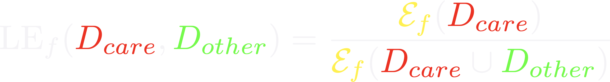

### Biomedical Data Science: <br>Big Data Science Gone Sideways <br> <center>  </center> Joshua T. Vogelstein, PhD ( [jovo@jhu.edu](mailto:jovo@jhu.edu), <!-- <img src="images/Twitter_Logo_Blue.svg"/> --> <a href="https://twitter.com/neuro_data" >@neuro_data</a>) <br> <!-- Jayanta Dey, Ali Geisa, Hayden Helm, Ronak Mehta, Will LeVine, --> <!-- Carey E. Priebe<br> --> [Biomedical Engineering](https://www.bme.jhu.edu/) | [Johns Hopkins University](https://www.jhu.edu/) --- class:middle # (Big) Data Science --- ### Data Science Definition <br>(paraphrasing wikipedia) a field that develops and uses computational statistics to extract knowledge from (big) data, and applies that knowledge across a broad range of applications --- ### What is 'Big Data'? - Consider Amazon ledger - Billions of records/samples/rows (eg, transactions) - Hundreds of features (eg, user, time, $, location, payment, etc...)  "Tall & Skinny" --- ### What are the big data challenges? - Basically an infinite amount of data - Need compute systems that can store/process it - Existing ML framework theory is perfect for this --- ### Formal Classical ML Framework - Let $X_i$ be a feature vector (e.g., a cancer genome for subject $i$) - Let $Y_i$ be a class label (e.g., pancreatic cancer) - Given $n$ samples of training data, $(X_i, Y_i)$ - Assumption 1: training data sampled from some distribution - Given a new test sample, $(X,Y)$ - Assumption 2: test data are sampled from the same distribution - Find an algorithm that predicts $Y$ accurately with a huge amount of data --- ### Classical ML Theory - Under the above two assumptions - if we get an infinite amount of data - then we have algorithms that will perform optimally .ye[Implication: just keep getting more and more data, and build bigger machines] - And that works great for many 'web-scale' problems - $>$10B USD invested annually - ~3M data scientists --- ### What are the issues? -- - Anti-democratic -- - Anti-environment -- - Racist chatbots -- - Biomedical data --- class:middle # Biomedical Data Science --- ### Biomedical Data Science Definition <br>(according to wikipedia) -- <br><br><br><br><br> (crickets) --- ### Scale of biomedical data science -- - \# of people would benefit from better biomedical data science? -- - ~10,000,000,000 -- - \# of webpages with "biomedical data science"? -- - ~100,000 -- - \# of "biomedical data scientists" are there? -- - ~100 -- .ye[Implications: Biomedical data science is the most important non-discipline in the world, imho.] --- ### What is 'Biomedical Data'? - Consider CancerSEEK - Billions of features (eg, base pairs) - Hundreds of samples/subjects (eg, patients)   "Short & Fat" (we will call this .r[$D_{care}$]) --- ### What is the main challenge? .pull-left[  <!-- Alice's restaurant theorem! --> ] .pull-right[ Existing ML 1. framework 2. theory 3. algorithms are designed for tall & skinny (web-scale) data, and are therefore .ye[inappropriate and inadequate] for many real world biomedical data science problems. ] --- ### What will we do? 1. Devise formal framework for biomedical data science 2. Develop theory to guide algorithmic & experimental design 3. Design algorithms with provable guarantees 4. Demonstrate success in real world biomedical data experiments --- class: middle # Devise Framework --- ### Formal Biomedical ML Framework - Let $X_i$ be a feature vector (e.g., a cancer genome for subject $i$) - Let $Y_i$ be a class label (e.g., pancreatic cancer) - Given $n$ samples of training data, $(X_i, Y_i)$ - Assumption 1: training data sampled from some distribution - Given a new test sample, $(X,Y)$ - Assumption 2: test data are sampled from the same distribution - Find an algorithm that predicts $Y$ accurately with a <del>huge</del> .ye[tiny] amount of data --- ### How is that even possible? Transfer information from - subject matter experts - other related datasets --- ### Learning Efficiency Let - $f$ be some learning algorithm (eg, deep net) - .ye[$\mathcal{E}_f$] be some .ye[error metric] we care about (eg, squared error) - .r[$D_{care}$] be some dataset we .r[care] about (eg, pancreatic cancer) - .green[$D_{other}$] be an .green[other] dataset (eg, all other cancer data)  <br><br><br> <!-- $$LE\_f( D\_0,D\_1)= \frac{ \mathcal{E}_f(D_0) }{ \mathcal{E}_f(D_0 \cup D_1)}$$ --> - If $f$ is able to reduce .ye[error] via .green[$D_{other}$], - then $f$ learned from .green[$D_{other}$] (aka, $f$ transferred) .footnote[Geisa et al. [Towards a theory of out-of-distribution learning](https://arxiv.org/abs/2109.14501), arXiv, 2021. ] --- ### Transfer is the key - Efficient .ye[transfer] is the key to biomedical data science success. - Literature has .ye[never] evaluated algorithms on this basis - fixated on accuracy - In real world biomedical data science challenges (eg, cancer datasets), .r[$D_{care}$] is small Learning efficiency emerges from a .ye[general theoretical framework] we have introduced, which is better suited for real-world biomedical data science challenges. -- .r[Take home message 1: For biomedical data science<br> - algorithms that simply improve with more data are inadequate; - we require algorithms that transfer information more efficiently.] --- class: middle # Develop Theory --- ### Classical ML Theory - Weak learning: $f$ can do better than chance with sufficient data - Strong learning: $f$ can do arbitrarily close to optimal with sufficient data - Weak learner theorem: if a problem is weakly learnable, it is also strongly learnable - Implications: if $f$ is doing better than chance, get more data to improve performance But this does not deal at all with the need to transfer... --- ### Out-of-Distribution Learning Theory - Let $X_i$ be a feature vector (e.g., a cancer genome for subject $i$) - Let $Y_i$ be a class label (e.g., pancreatic cancer) - Given $n$ samples of training .r[$D_{care}$] data, .r[$(X_i, Y_i)$] - Assumption 1: training data sampled from some distribution - Given a new .lb[test] sample, .lb[$(X,Y)$] - Assumption 2: .lb[test] data are sampled from the same distribution - Given a $m$ other samples .green[$D_{other}$], .green[$(X_j,Y_j)$] - Assumption 3: <em style="color:red">$D\_{care}$</em> and <em style="color:#00cc44">$D\_{other}$</em> are sampled from the <del>same</del> .ye[different] distributions - Find an algorithm that predicts .lb[$Y$] accurately leveraging both <em style="color:red">$D\_{care}$</em> and <em style="color:#00cc44">$D\_{other}$</em> . .footnote[Geisa et al. [Towards a theory of out-of-distribution learning](https://arxiv.org/abs/2109.14501), arXiv, 2021. ] --- ### OOD Learning Theory - Weak learning: $f$ can do better using <em style="color:red">$D\_{care}$</em> and <em style="color:#00cc44">$D\_{other}$</em> than using <em style="color:red">$D\_{care}$</em> alone - Strong learning: $f$ can do arbitrarily close to optimal with sufficiently large .green[$D_{other}$] - Weak OOD learner theorem: if a problem is weakly learnable, it is .ye[not necessarily] strongly learnable - Implications: if $f$ is doing better than chance, getting more data is .ye[not] guaranteed to improve performance -- .r[Take home message 2: For biomedical data science - more data are inadequate; - we require more informative data + algorithms that transfer information more efficiently.] --- class: middle # Design Algorithms --- ### Algorithm Schemata  A. Single learners: SVM, decision tree, deep nets <br> B. Ensembling decisions: random forest, gradient boosting tree, network ensembles (win all challenges and deployed in practice) <br> C. Ensembling representations: new idea .footnote[Vogelstein et al. [Ensembling Representations for Synergistic Lifelong Learning with Quasilinear Complexity](https://arxiv.org/abs/2004.12908), arXiv, 2020.] --- ## CIFAR 10x10 - CIFAR 100 is an image dataset with 100 categories of images. - We create 10 tasks, each with 10 categories of images. - We train a separate internal representation for each task. - We ensemble the internal representations across tasks. - We evaluate performance sequentially. <!--  --> <img src="images/l2m_18mo/cifar-10.png" style="position:absolute; left:150px; width:420px;"/> --- ### Ensembling Representations<br>Positive Forward Transfer   <!-- --- --> <!-- ### Ensembling Representations<br>Positive Backward Transfer --> <!--  --> .r[Take home message 3: For biomedical data science - prior state of the art algorithms algorithms fail to transfer; - ensembling representations uniquely achieves both forward and backward transfer.] --- class: middle # Demonstrate Success --- ### What are the real-world problems? A Concrete Example: COVID-19 1. Volume: multiple short & fat datasets, instead of 1 tall & skinny 2. Variety: data includes historical diagnoses, procedures, etc. 3. Velocity: standards of care were changing rapidly 4. Veracity: data manually labeled, no codes, missing data, etc. 5. Variability: data came from multiple disparate sources 6. priVacy: we could not legally/ethically share across datasets These are the .ye[6 Vs] of biomedical data --- ### Background: 2018   --- ### Background: 2020 - Jan: COVID hits the world - Feb: Evidence grows that cytokine release syndrome is associated with death - Mar: Dad realizes treatment plan may already be available - alpha blockers are cheap, generic, orally administered, globally available, with very low side-effects - April-June: Jovo tries to get a large enough .r[$D_{care}$] and fails - July: Jovo finds multiple "short & fat" .r[$D_{care}$] datasets - Aug: Jovo++ designs new methods to combine these datasets based on our framework --- ### Our Strategy - Transfer from subject matter experts, by identifying relevant: - procedures, - diagnoses, - drugs, - timelines, - etc. - Transfer from other data: - Learn a separate causal model on multiple small datasets. <!-- - Variety, Velocity, Veracity, Variability: Adjust for time-varying practices, missing data, noisy labels, etc. --> - Rather than sharing data, share internal representations. Now we have federated nonlinear causal models that respect patient privacy. --- ### Alpha-Blocker Study  <!-- - Ensembling decisions yields an impossible result. --> - Ensembling representations improves estimated effect size. - This motivated two ongoing COVID-19 trials using alpha blockers. - This treatment will also work on COVID-22, MERS-24, flu, etc. .r[Take home message 4: These ideas solve life-threatening, real-world data problems.] <!-- for which classical methods fail.] --> --- class: middle # Discussion --- ### Summary - Biomedical data science is wide open - it impacts literally everyone - it is not an established field - it has unique challenges unmet by other approaches. - We leverage biomedical expertise with statistical insight to: 1. devise framework for biomedical data science 2. develop theory to guide experiments & algorithms 3. design algorithms with provable guarantees - We successfully applied these ideas to real-world COVID data addressing each of the 6 V's of biomedical data --- ### Future Implications - Our application shows methods are nimble - Many cancers afflict a small number of people - All cancer (and any other biomedical data science application) could benefit from this kind of approach - Our work is imminently commercializable - Lots of consulting - Multiple start-ups - Google and Microsoft deploy our algorithms already --- ### Existing funding challenges - NIH does not grok data science - NSF will not fund medicine - DARPA does not care about ailments that don't kill soldiers - Foundations are our only hope - This work is expensive (the data are still big, just 'gone sideways') --- ### Theory & Methods Publications 1. A Geisa, et al. [Towards a theory of out-of-distribution learning](https://arxiv.org/abs/2109.14501), arXiv, 2021. 1. JT Vogelstein, et al. [Ensembling Representations for Synergistic Lifelong Learning with Quasilinear Complexity](https://arxiv.org/abs/2004.12908), arXiv, 2020. 1. X, Haoyin, et al. [Streaming Decision Trees and Forests](https://arxiv.org/abs/2110.08483), arXiv, 2021. 1. CE Priebe, et al. [Modern Machine Learning: Partition and Vote](https://doi.org/10.1101/2020.04.29.068460), bioRxiv, 2020. 1. R Guo, et al. [Estimating Information-Theoretic Quantities with Uncertainty Forests](https://arxiv.org/abs/1907.00325). arXiv, 2019. 1. R Perry, et al. [Manifold Forests: Closing the Gap on Neural Networks](https://openreview.net/forum?id=B1xewR4KvH). arXiv, 2019. 1. C Shen and J. T. Vogelstein. [Decision Forests Induce Characteristic Kernels](https://arxiv.org/abs/1812.00029). arXiv, 2019. 1. M Madhya, et al. [BLOCKSET: Reducing Inference Latency for Tree Ensemble Deployment](https://dl.acm.org/doi/10.1145/3447548.3467368). KDD '21. <!-- 1. M Madhya, et al. [Geodesic Forests](https://dl.acm.org/doi/10.1145/3394486.3403094). KDD '20. --> 1. R Xiong, et al. [Federated Causal Inference in Heterogeneous Observational Data](https://papers.ssrn.com/sol3/papers.cfm?abstract_id=3888599). SSRN, 2021. --- ### Real-World Data Publications .small[ 1. J Cohen, et al. [Detection and localization of surgically resectable cancers with a multi-analyte blood test](https://www.science.org/doi/10.1126/science.aar3247). Science, 218. 2. M Powell, et al. [Ten Rules for Conducting Retrospective Pharmacoepidemiological Analyses: Example COVID-19 Study](https://www.frontiersin.org/articles/10.3389/fphar.2021.700776/full), Frontiers in Pharmacology, 2021. 3. A Koenecke, et al. [Alpha-1 adrenergic receptor antagonists to prevent hyperinflammation and death from lower respiratory tract infection](https://elifesciences.org/articles/61700), Elife, 2021. 4. L Rose, et al. [The association between Alpha-1 adrenergic receptor antagonists and in-hospital mortality from COVID-19](https://www.frontiersin.org/articles/10.3389/fmed.2021.637647/full), Frontiers in Medicine, 2021. 5. MF Konig, et al. [Preventing cytokine storm syndrome in COVID-19 using alpha-1 adrenergic receptor antagonists](https://www.jci.org/articles/view/139642). The Journal of Clinical Investigation, (7)130:3345-3347, 2020. 6. MA Haendel, et al. [The National COVID Cohort Collaborative (N3C): Rationale, design, infrastructure, and deployment](https://academic.oup.com/jamia/article/28/3/427/5893482), Journal of the American Medical Informatics Association, 2020. 7. S Li, et al. [COVID-19 outcomes among hospitalized men with or without exposure to alpha-1-adrenergic receptor blocking agents](https://www.medrxiv.org/content/10.1101/2021.04.08.21255148v1.full), medRxiv, 2021. 8. T Zuzul, et al. [Dynamic Silos: Increased Modularity in Intra-organizational Communication Networks during the Covid-19 Pandemic](https://arxiv.org/abs/2104.00641), arXiv, 2021. ] --- ### Acknowledgements <!-- <div class="small-container"> <img src="faces/ebridge.jpg"/> <div class="centered">Eric Bridgeford</div> </div> <div class="small-container"> <img src="faces/pedigo.jpg"/> <div class="centered">Ben Pedigo</div> </div> <div class="small-container"> <img src="faces/jaewon.jpg"/> <div class="centered">Jaewon Chung</div> </div> --> <div class="small-container"> <img src="faces/yummy.jpg"/> <div class="centered">yummy</div> </div> <div class="small-container"> <img src="faces/lion.jpg"/> <div class="centered">lion</div> </div> <div class="small-container"> <img src="faces/violet.jpg"/> <div class="centered">.black[owl]</div> </div> <div class="small-container"> <img src="images/family3.png"/> <div class="centered">family</div> </div> <div class="small-container"> <img src="faces/earth.jpg"/> <div class="centered">earth</div> </div> <div class="small-container"> <img src="faces/milkyway.jpg"/> <div class="centered">milkyway</div> </div> ##### JHU <div class="small-container"> <img src="faces/cep.png"/> <div class="centered">Carey Priebe</div> </div> <div class="small-container"> <div class="centered">Ali Geisa</div> </div> <!-- <div class="small-container"> <img src="faces/randal.jpg"/> <div class="centered">Randal Burns</div> </div> --> <!-- <div class="small-container"> <img src="faces/cshen.jpg"/> <div class="centered">Cencheng Shen</div> </div> --> <!-- <div class="small-container"> <img src="faces/bruce_rosen.jpg"/> <div class="centered">Bruce Rosen</div> </div> <div class="small-container"> <img src="faces/kent.jpg"/> <div class="centered">Kent Kiehl</div> </div> --> <!-- <div class="small-container"> <img src="faces/mim.jpg"/> <div class="centered">Michael Miller</div> </div> <div class="small-container"> <img src="faces/dtward.jpg"/> <div class="centered">Daniel Tward</div> </div> --> <!-- <div class="small-container"> <img src="faces/vikram.jpg"/> <div class="centered">Vikram Chandrashekhar</div> </div> <div class="small-container"> <img src="faces/drishti.jpg"/> <div class="centered">Drishti Mannan</div> </div> --> <!-- <div class="small-container"> <img src="faces/jesse.jpg"/> <div class="centered">Jesse Patsolic</div> </div> --> <!-- <div class="small-container"> <img src="faces/falk_ben.jpg"/> <div class="centered">Benjamin Falk</div> </div> --> <!-- <div class="small-container"> <img src="faces/kwame.jpg"/> <div class="centered">Kwame Kutten</div> </div> --> <!-- <div class="small-container"> <img src="faces/perlman.jpg"/> <div class="centered">Eric Perlman</div> </div> --> <!-- <div class="small-container"> <img src="faces/loftus.jpg"/> <div class="centered">Alex Loftus</div> </div> --> <!-- <div class="small-container"> <img src="faces/bcaffo.jpg"/> <div class="centered">Brian Caffo</div> </div> --> <!-- <div class="small-container"> <img src="faces/minh.jpg"/> <div class="centered">Minh Tang</div> </div> --> <!-- <div class="small-container"> <img src="faces/avanti.jpg"/> <div class="centered">Avanti Athreya</div> </div> --> <!-- <div class="small-container"> <img src="faces/vince.jpg"/> <div class="centered">Vince Lyzinski</div> </div> --> <!-- <div class="small-container"> <img src="faces/dpmcsuss.jpg"/> <div class="centered">Daniel Sussman</div> </div> --> <!-- <div class="small-container"> <img src="faces/youngser.jpg"/> <div class="centered">Youngser Park</div> </div> --> <!-- <div class="small-container"> <img src="faces/shangsi.jpg"/> <div class="centered">Shangsi Wang</div> </div> --> <!-- <div class="small-container"> <img src="faces/tyler.jpg"/> <div class="centered">Tyler Tomita</div> </div> --> <!-- <div class="small-container"> <img src="faces/james.jpg"/> <div class="centered">James Brown</div> </div> --> <!-- <div class="small-container"> <img src="faces/disa.jpg"/> <div class="centered">Disa Mhembere</div> </div> --> <!-- <div class="small-container"> <img src="faces/gkiar.jpg"/> <div class="centered">Greg Kiar</div> </div> --> <!-- <div class="small-container"> <img src="faces/jeremias.png"/> <div class="centered">Jeremias Sulam</div> </div> --> <div class="small-container"> <img src="https://raw.githubusercontent.com/neurodata/neurodata.io/deploy/source/images/people/mike-powell.jpg"/> <div class="centered">Mike Powell</div> </div> <div class="small-container"> <img src="faces/meghana.png"/> <div class="centered">Meghana Madhya</div> </div> <!-- <div class="small-container"> <img src="faces/percy.png"/> <div class="centered">Percy Li</div> </div> --> <!-- <div class="small-container"> <img src="faces/hayden.png"/> <div class="centered">Hayden Helm</div> </div> --> <div class="small-container"> <img src="faces/rguo.jpg"/> <div class="centered">Richard Gou</div> </div> <div class="small-container"> <img src="faces/ronak.jpg"/> <div class="centered">Ronak Mehta</div> </div> <div class="small-container"> <img src="faces/jayanta.jpg"/> <div class="centered">Jayanta Dey</div> </div> <div class="small-container"> <img src="faces/will.jpg"/> <div class="centered">Will LeVine</div> </div> ##### Microsoft Research <div class="small-container"> <img src="faces/chwh-180x180.jpg"/> <div class="centered">Chris White</div> </div> <div class="small-container"> <img src="faces/weiwei.jpg"/> <div class="centered">Weiwei Yang</div> </div> <div class="small-container"> <img src="faces/jolarso150px.png"/> <div class="centered">Jonathan Larson</div> </div> <div class="small-container"> <img src="faces/brtower-180x180.jpg"/> <div class="centered">Bryan Tower</div> </div> ##### Funding: DARPA L2M, NSF {CAREER, AI Institute Planning, NeuroNex} <!-- Hava, Ben, Robert, Jennifer, Ted. --> {[BME](https://www.bme.jhu.edu/),[CIS](http://cis.jhu.edu/), [ICM](https://icm.jhu.edu/), [KNDI](http://kavlijhu.org/)}@[JHU](https://www.jhu.edu/) | [neurodata](https://neurodata.io) <br> [jovo@jhu.edu](mailto:j1c@jhu.edu) | <http://neurodata.io/talks> | [@neuro_data](https://twitter.com/neuro_data) </div> <!-- <img src="images/funding/nsf_fpo.png" STYLE="HEIGHT:95px;"/> --> <!-- <img src="images/funding/nih_fpo.png" STYLE="HEIGHT:95px;"/> --> <!-- <img src="images/funding/darpa_fpo.png" STYLE=" HEIGHT:95px;"/> --> <!-- <img src="images/funding/iarpa_fpo.jpg" STYLE="HEIGHT:95px;"/> --> <!-- <img src="images/funding/KAVLI.jpg" STYLE="HEIGHT:95px;"/> --> <!-- <img src="images/funding/schmidt.jpg" STYLE="HEIGHT:95px;"/> --> --- <!-- background-image: url(images/) --> <img src="images/kids_2021nov.PNG" style="position:absolute; left:250px; width:420px; top:0px;"/> .footnote[Questions?]